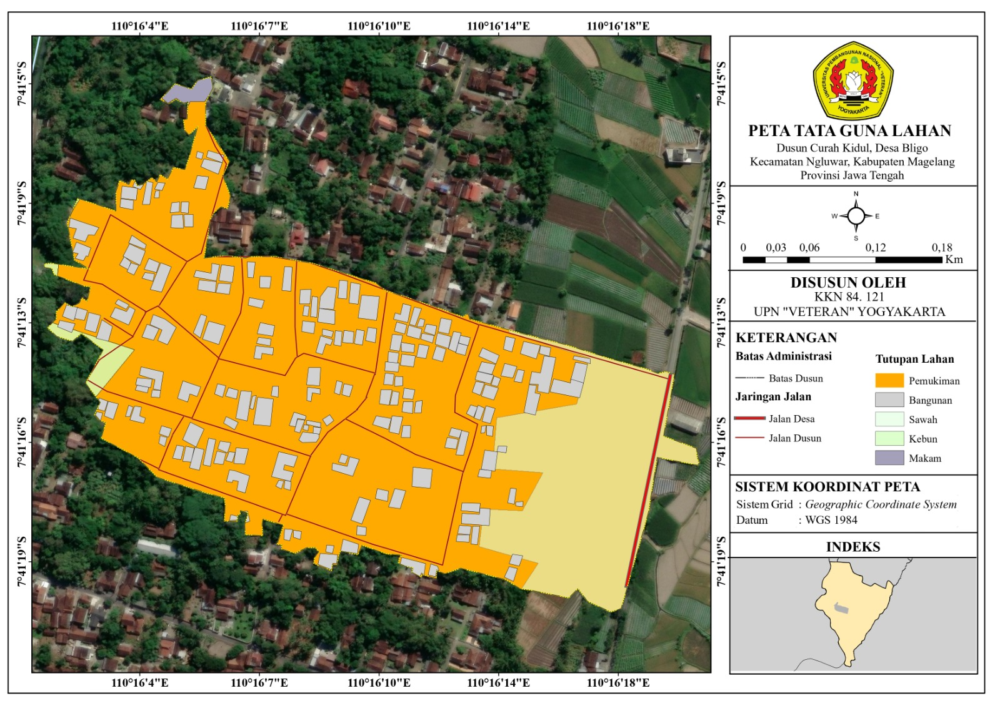
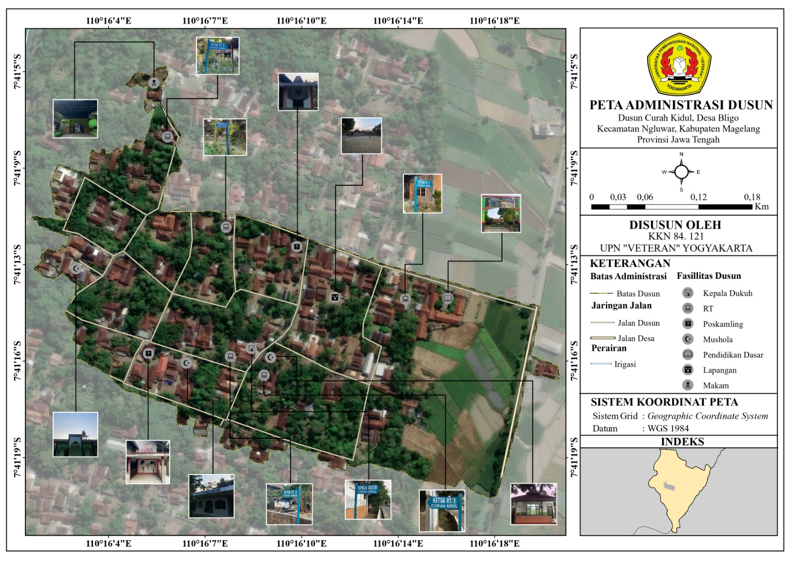

Informasi
Kerja Bakti
Kerja bakti merupakan kegiatan masyarakat yang dilaksanakan secara berkala sebagai bentuk gotong royong untuk menjaga kebersihan lingkungan, merawat fasilitas umum, dan mempererat kebersamaan antarwarga.
Pertemuan RT
Pertemuan RT merupakan forum komunikasi masyarakat yang diselenggarakan secara berkala sebagai sarana penyampaian informasi, musyawarah, serta koordinasi dalam mendukung pelaksanaan program dan pembangunan di lingkungan dusun.
PKK
Pemberdayaan Kesejahteraan Keluarga (PKK) merupakan organisasi kemasyarakatan yang berperan dalam meningkatkan kesejahteraan keluarga melalui berbagai program di bidang kesehatan, pendidikan, ekonomi, dan pembinaan keluarga.
Posyandu
Pos Pelayanan Terpadu (Posyandu) merupakan layanan kesehatan berbasis masyarakat yang dilaksanakan secara rutin untuk memantau kesehatan ibu dan anak serta mendukung peningkatan derajat kesehatan masyarakat.
TPA
Taman Pendidikan Al-Qur'an (TPA) merupakan kegiatan keagamaan nonformal yang bertujuan membimbing anak-anak dalam mempelajari Iqra', Al-Qur'an, nilai-nilai keislaman, dan pembinaan akhlak sejak dini.
Karang Taruna
Karang Taruna merupakan organisasi kepemudaan yang menjadi sarana pembinaan dan pengembangan potensi generasi muda melalui kegiatan sosial, pengembangan kepemimpinan, serta pemberdayaan masyarakat.
Informasi Publik
Peta Dusun
Peta Tata Guna Lahan
Peta tata guna lahan Dusun Curah Kidul memberikan informasi mengenai kondisi dan pemanfaatan lahan yang ada di wilayah dusun. Peta ini menunjukkan pembagian penggunaan lahan berdasarkan fungsinya, seperti kawasan permukiman, lahan pertanian, kawasan konservasi, jalan, dan penggunaan lahan lainnya. Melalui peta ini, masyarakat dapat mengetahui kondisi wilayah secara jelas sehingga informasi tersebut dapat dimanfaatkan sebagai bahan perencanaan dan pengelolaan lahan di Dusun Curah Kidul.
{kind=link}

Klik gambar untuk melihat ukuran penuh.Peta Administrasi
Peta administrasi Dusun Curah Kidul memberikan gambaran mengenai batas wilayah serta letak fasilitas yang terdapat di dalam dusun. Informasi yang ditampilkan meliputi batas administrasi, jaringan jalan, dan lokasi fasilitas umum, seperti tempat ibadah, pos ronda, sekolah, serta balai pertemuan. Keberadaan peta ini memudahkan masyarakat untuk mengenali tata letak wilayah dan mengetahui lokasi fasilitas yang tersedia di Dusun Curah Kidul.
{kind=link}

Klik gambar untuk melihat ukuran penuh.Informasi Publik
Poster Edukasi

Kuliah Yuk!!!
Poster ini memberikan edukasi mengenai pentingnya melanjutkan pendidikan ke jenjang perguruan tinggi setelah lulus SMA/SMK. Melalui informasi mengenai manfaat kuliah, fakta dan mitos yang sering beredar, serta berbagai pilihan setelah lulus, poster ini bertujuan memotivasi generasi muda agar berani merencanakan masa depan dan terus mengembangkan potensi diri sesuai minat dan kemampuan masing-masing.

Kenali apa itu beasiswa
Poster ini memuat informasi edukatif bertema "Kenali Beasiswa" untuk membantu calon pendaftar memahami peluang bantuan pendidikan yang tersedia. Di bagian atas, ditampilkan jenis-jenis beasiswa seperti KIP Kuliah, beasiswa kampus, yayasan, perusahaan/CSR, hingga pemerintah daerah. Selain itu, poster ini juga membagikan tips sukses mendapatkan beasiswa, antara lain rajin mencari informasi, menjaga nilai akademik, aktif berorganisasi, mengikuti lomba, serta menyiapkan dokumen lebih awal.